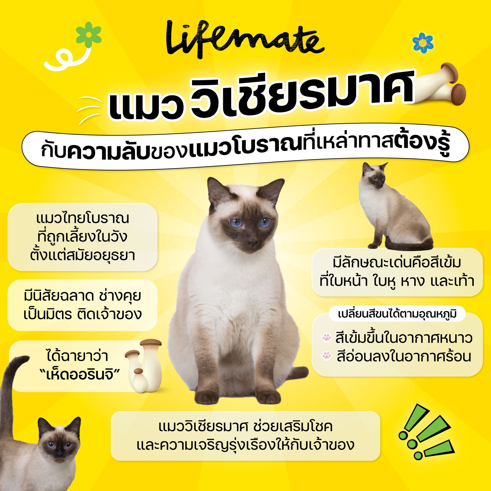
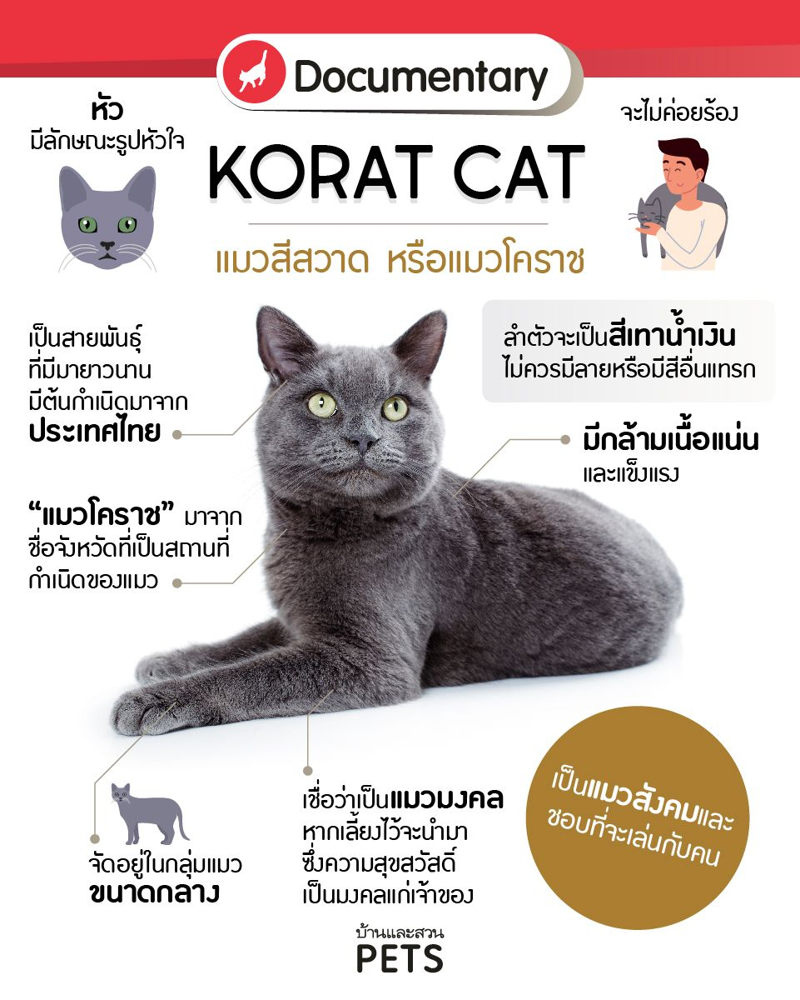
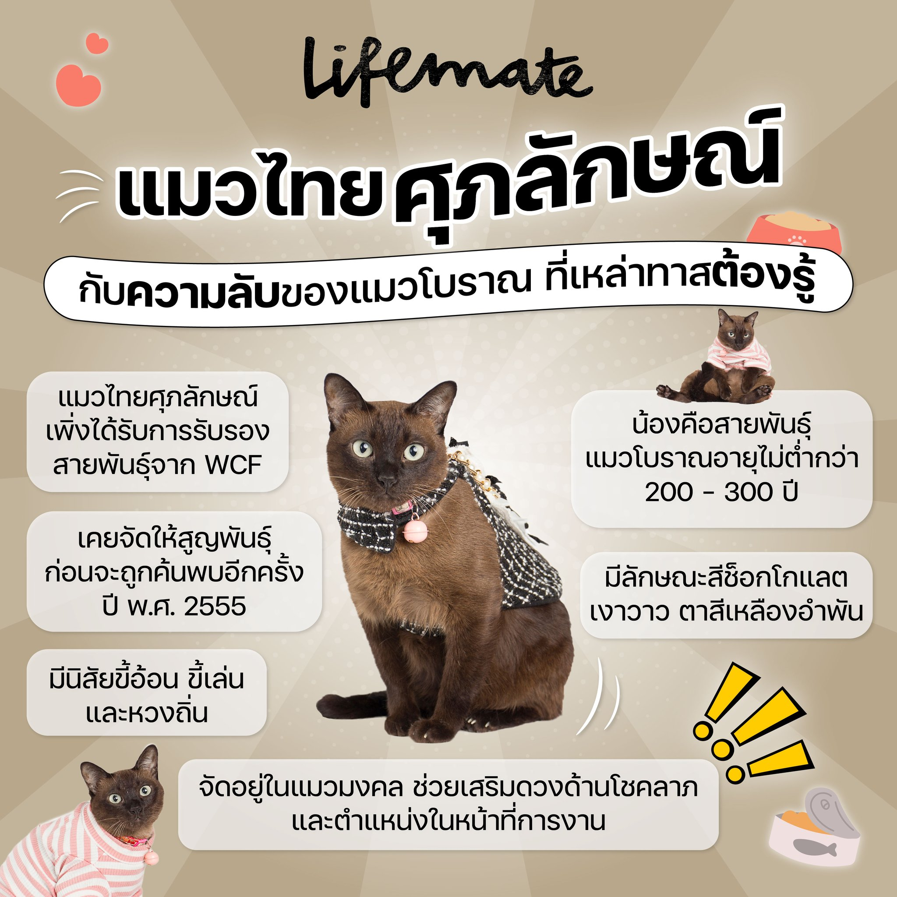
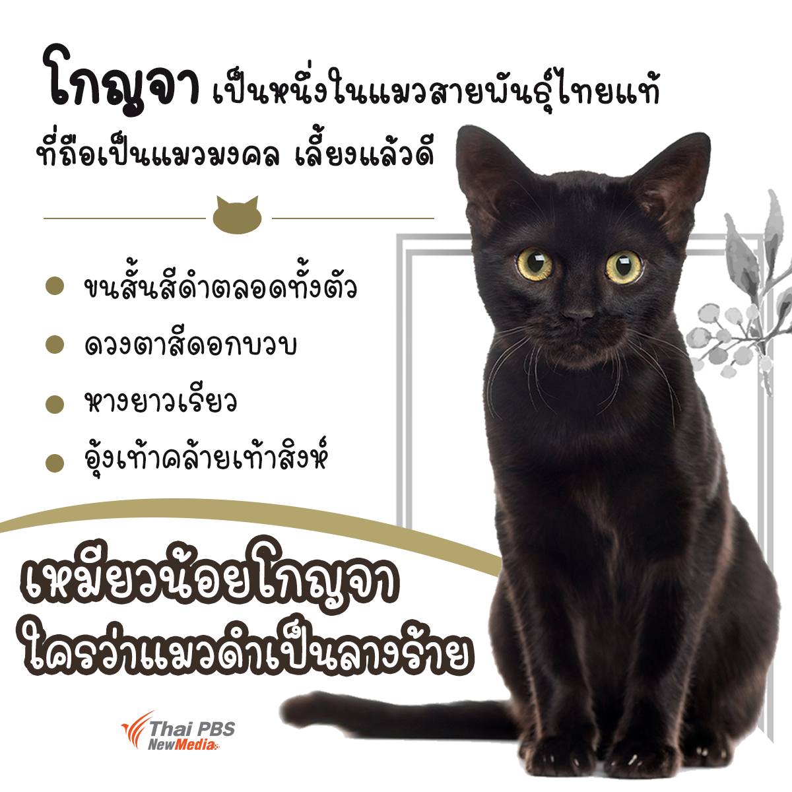
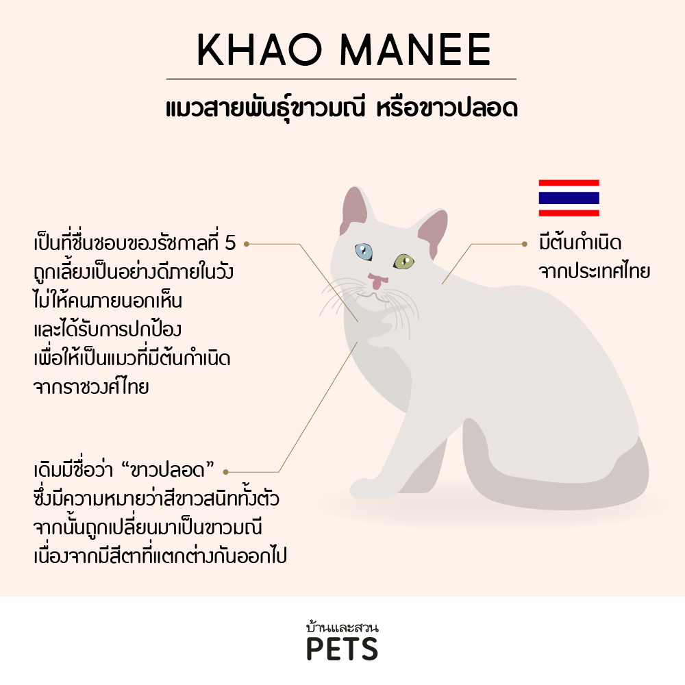

แมวพันธ์ุไทย
เป็นแมวที่เชื่อว่ามีถิ่นกำเนิดอยู่ในประเทศไทยและถูกบันทึกไว้ในสมุดข่อยโบราณ ว่ามีรูปร่าง ลักษณะและสีสันที่สวยงาม อีกทั้งยังเชื่อว่าหากเลี้ยงแมวไทยมงคลไว้ในบ้านก็จะให้คุณแก่เจ้าของทั้งทรัพย์สิน เงินทอง อำนาจ หรือ บารมี นอกจากนี้แมวไทยยังมีนิสัยอ้อนเก่ง รักบ้าน รักเจ้าของ ฉลาด และ คล่องแคล่วว่องไว
แมวพันธุ์ไทย: มรดกแห่งสยาม คู่บ้านคู่เมือง
แมวพันธุ์ไทยเป็นสัตว์เลี้ยงคู่บ้านคู่เมืองของชาวสยามมาตั้งแต่สมัยโบราณกาล มีความผูกพันกับวิถีชีวิตและวัฒนธรรมไทยอย่างลึกซึ้ง ปรากฏในวรรณกรรม ตำราโบราณ และความเชื่อต่างๆ แมวไทยมีลักษณะเด่นที่สง่างาม ฉลาด และมีเสน่ห์เฉพาะตัว ทำให้เป็นที่นิยมทั้งในไทยและต่างประเทศ
จำนวนสายพันธุ์แมวไทยหลักและชื่อเรียก
ในปัจจุบัน แมวไทยที่ได้รับการยอมรับและอนุรักษ์อย่างเป็นทางการ มักอ้างอิงจาก "สมุดข่อยโบราณ" หรือ "ตำราแมว" ซึ่งกล่าวถึงแมวดี 17 สายพันธุ์ และแมวร้าย 6 สายพันธุ์ (แต่บางตำราก็อาจมีจำนวนที่แตกต่างกันเล็กน้อย) ในบรรดา 17 สายพันธุ์แมวดีนั้น ที่ยังคงหลงเหลือและเป็นที่รู้จักแพร่หลายในปัจจุบันมีประมาณ 5-6 สายพันธุ์หลัก ที่มีการเพาะพันธุ์และอนุรักษ์อย่างจริงจัง ได้แก่
- แมววิเชียรมาศ (Siamese Cat): เป็นแมวไทยที่โด่งดังที่สุดในระดับโลก
- แมวสีสวาด (Korat Cat): หรือแมวโคราช
- แมวศุภลักษณ์ (Burmese Cat): หรือแมวทองแดง
- แมวโกญจา (Black Cat): หรือแมวดำปลอด
- แมวขาวมณี (Khao Manee Cat): หรือแมวขาวปลอด
ส่วนสายพันธุ์อื่นๆ ในตำรา เช่น แมวนิลรัตน์ แมวแซมเสวียด แมวนิลจักร แมวลดาด แมวเก้าแต้ม แมวประลาศ แมวรัตนกำพล แมววิลาศ แมวแหวน เพชร แมวครุฑ แมวปัดเสวียด แมวกระจอก แมวการเวก นั้นบางสายพันธุ์ก็อาจจะสูญหายไปแล้ว หรือพบเห็นได้ยากมาก หรือบางครั้งอาจมีการตีความที่ต่างกันไปตามยุคสมัย
ประวัติและความเป็นมา : ถิ่นกำเนิดและการค้นพบ
การค้นพบ
- แมววิเชียรมาศ: เป็นแมวที่ถูกนำออกนอกประเทศไทยเป็นสายพันธุ์แรกๆ เชื่อกันว่าถูกนำไปจัดแสดงที่อังกฤษในปี พ.ศ. 2427 (ค.ศ. 1884) และได้รับความนิยมอย่างรวดเร็วจนกลายเป็นสัญลักษณ์ของแมวตะวันออก
- แมวสีสวาด: เป็นแมวที่ได้รับความสนใจจากต่างประเทศในช่วงปลายศตวรรษที่ 19 และต้นศตวรรษที่ 20 โดยมีการตั้งชื่อว่า "โคราช" ตามชื่อจังหวัดที่เป็นถิ่นกำเนิด
- แมวศุภลักษณ์: ถูกนำเข้าสู่สหรัฐอเมริกาในช่วงต้นศตวรรษที่ 20 และกลายเป็นต้นกำเนิดของแมวสายพันธุ์เบอร์มีสในปัจจุบัน
- แมวขาวมณี: เป็นสายพันธุ์ที่เพิ่งได้รับการส่งเสริมและรู้จักในระดับสากลมากขึ้นในช่วงไม่กี่ทศวรรษที่ผ่านมา แม้จะเป็นแมวที่มีมานานในประเทศไทย
- แมวโกญจา: นั้น แม้จะเป็นหนึ่งในสายพันธุ์แมวไทยโบราณที่ปรากฏใน สมุดข่อยโบราณ มาอย่างยาวนาน แต่ในเรื่องของการ "ค้นพบ" หรือ "การถูกนำออกไปเผยแพร่ในต่างประเทศ" เหมือนกับแมววิเชียรมาศ แมวสีสวาด หรือแมวศุภลักษณ์นั้น ไม่พบข้อมูลที่ชัดเจนเท่าสายพันธุ์อื่น
ทำไมถึงเป็นแมวพันธุ์ไทย?
การที่แมวเหล่านี้ถูกจัดว่าเป็น "แมวพันธุ์ไทย" เพราะ
- ถิ่นกำเนิด: มีหลักฐานทางประวัติศาสตร์และทางพันธุกรรมที่ชัดเจนว่ามีต้นกำเนิดและวิวัฒนาการอยู่ในประเทศไทยมาอย่างยาวนาน ไม่ได้ถูกนำเข้าจากต่างประเทศ
- ลักษณะเฉพาะตัว: แต่ละสายพันธุ์มีลักษณะรูปร่าง สีขน ดวงตา และนิสัยที่เป็นเอกลักษณ์ ซึ่งถูกบันทึกไว้ในตำราโบราณของไทยมาตั้งแต่หลายร้อยปีก่อน
- ความผูกพันกับวัฒนธรรม: แมวเหล่านี้อยู่คู่กับวิถีชีวิตคนไทยมาช้านาน มีบทบาทในความเชื่อ ประเพณี และวรรณกรรมไทย
รูปร่างหน้าตา ลักษณะนิสัยส่วนตัว โรคประจำสายพันธุ์ และวิธีการดูแล

วิเชียรมาศ
แมววิเชียรมาศ
รูปร่างหน้าตา
- ลำตัว: ขนาดปานกลาง เพรียว สง่า มีกล้ามเนื้อกระชับ
- ขน: สั้น เรียบ แนบตัว สีครีมอ่อนๆ บริเวณลำตัว
- แต้มสี: มีสีเข้ม(น้ำตาลเข้มเกือบดำ) บริเวณหน้า, ใบหู, ปลายเท้าทั้งสี่, และหาง สีแต้มจะเข้มขึ้นตามอายุและอุณหภูมิที่เย็นลง
- ดวงตา: รูปอัลมอนด์ สีฟ้าสดใส และเป็นประกาย (ถือเป็นเอกลักษณ์สำคัญ)
- ศีรษะ: รูปสามเหลี่ยม ปลายแหลม
- หาง: ยาวเรียว ปลายแหลม อาจมีรอยหักที่ปลายหาง (ซึ่งในอดีตถือเป็นลักษณะดี แต่ในมาตรฐานสากลปัจจุบันถือเป็นข้อบกพร่อง)
ลักษณะนิสัยส่วนตัว
- ฉลาดและซน: เรียนรู้เร็ว ขี้เล่น อยากรู้อยากเห็น
- เสียงดังและขี้อ้อน: ชอบส่งเสียงร้องเพื่อเรียกร้องความสนใจ และชอบอยู่ใกล้ชิดกับเจ้าของ
- ขี้หวงและติดเจ้าของ: มีความผูกพันกับเจ้าของมาก อาจแสดงอาการหวงเจ้าของได้
- เข้ากับเด็กและสัตว์เลี้ยงอื่นได้ดี: หากได้รับการฝึกและการเข้าสังคมตั้งแต่เด็ก
โรคประจำสายพันธุ์
- โรคตา: อาจพบปัญหาสายตา เช่น ตาส่อน หรือต้อกระจก (พบได้น้อยลงในสายพันธุ์ที่ได้รับการเพาะพันธุ์อย่างดี)
- โรคระบบทางเดินหายใจ: อาจมีความเสี่ยงต่อโรคหอบหืดได้บ้าง
- Amyloidosis: โรคที่เกิดจากการสะสมโปรตีนผิดปกติในอวัยวะต่างๆ
วิธีการดูแล
- อาหาร: ให้อาหารแมวคุณภาพดี เหมาะสมกับวัยและกิจกรรม
- ดูแลขน: ขนสั้นดูแลไม่ยาก แปรงขนสัปดาห์ละ 1-2 ครั้ง
- การเล่น: ต้องการการเล่นและการกระตุ้นทางความคิดสูง ควรมีของเล่นหลากหลาย
- ความรักความสนใจ: เป็นแมวที่ต้องการความรักและความเอาใจใส่จากเจ้าของมาก ไม่ควรปล่อยให้อยู่ลำพังนานๆ
ความเชื่อหลักเกี่ยวกับแมวดี (นำโชคลาภ)

สีสวาด
แมวสีสวาด
รูปร่างหน้าตา
- ลำตัว: ขนาดปานกลาง เพรียวแต่แข็งแรง มีกล้ามเนื้อ
- ขน: สั้น แนบตัว สีเทาอมฟ้านวลๆ ตลอดทั้งตัว (สีสวาด) ปลายขนแต่ละเส้นมีสีเงินสะท้อนแสง ทำให้ดูเหมือนมีประกายเงินยามเคลื่อนไหว (ลักษณะพิเศษเรียกว่า Silvertip)
- ดวงตา: กลมโต สีเขียวสดใส (ในลูกแมวอาจเป็นสีอำพันก่อนจะเปลี่ยนเป็นสีเขียวเมื่อโตเต็มที่)
- ศีรษะ: รูปหัวใจเมื่อมองจากด้านหน้า
- จมูกและริมฝีปาก: สีม่วงอมเทา
ลักษณะนิสัยส่วนตัว
- ฉลาดและอ่อนโยน: เป็นแมวที่ฉลาดมาก มีความสุภาพและรักสงบ
- เงียบและไม่ค่อยส่งเสียง: เมื่อเทียบกับวิเชียรมาศ
- ภักดีและผูกพันกับเจ้าของ: เลือกผูกพันกับคนเพียงไม่กี่คนในบ้าน
- หวงถิ่นและไม่ชอบการเปลี่ยนแปลง: อาจไม่เป็นมิตรกับคนแปลกหน้าหรือสัตว์เลี้ยงใหม่ๆ ในบ้าน
- ไม่ชอบเสียงดัง: มีประสาทสัมผัสที่ดี จึงไม่ชอบเสียงดังหรือสภาพแวดล้อมที่วุ่นวาย
โรคประจำสายพันธุ์
- Gangliosidosis: เป็นโรคทางพันธุกรรมที่เกี่ยวข้องกับระบบประสาท
- โดยรวมเป็นแมวที่แข็งแรง มีอายุยืน
วิธีการดูแล
- อาหาร: ให้อาหารแมวคุณภาพดี
- ดูแลขน: ขนสั้นดูแลรักษาง่าย แปรงขนสัปดาห์ละครั้งก็เพียงพอ
- สภาพแวดล้อม: ต้องการสภาพแวดล้อมที่เงียบสงบและมั่นคง
- ความรัก: แม้จะดูเงียบๆ แต่ก็ต้องการความรักความผูกพันจากเจ้าของ
ความเชื่อหลักเกี่ยวกับแมวดี (นำโชคลาภ)

ศุภลักษณ์
แมวศุภลักษณ์
รูปร่างหน้าตา
- ลำตัว: ขนาดปานกลาง แข็งแรงและมีกล้ามเนื้อแน่น ตัวหนักกว่าที่ตาเห็น
- ขน: สั้น ละเอียด แนบตัว สีน้ำตาลเข้มทั่วทั้งตัว (สีทองแดง) อาจมีสีเข้มกว่าที่ปลายจมูก หู หรือเท้าเล็กน้อย แต่โดยรวมเป็นสีโทนเดียวกัน
- ดวงตา: กลมโต สีเหลืองอำพันถึงสีทอง (เป็นเอกลักษณ์สำคัญ)
- ศีรษะ: กลมมน
ลักษณะนิสัยส่วนตัว
- ขี้เล่นและร่าเริง: เป็นแมวที่กระตือรือร้น ชอบเล่นและสำรวจ
- ขี้อ้อนและเข้ากับคนง่าย: ชอบอยู่ใกล้ชิดกับเจ้าของมาก เป็นมิตรกับคนแปลกหน้าและสัตว์เลี้ยงอื่นๆ ได้ดี
- ฉลาดและปรับตัวเก่ง: เรียนรู้เร็วและสามารถปรับตัวเข้ากับสภาพแวดล้อมใหม่ๆ ได้ดี
- พลังงานสูง: ต้องการการเล่นและกิจกรรมที่เพียงพอ
โรคประจำสายพันธุ์
- Hypokalemic Polymyopathy: ภาวะกล้ามเนื้ออ่อนแรงจากโพแทสเซียมต่ำ
- Burmese Head Defect: ความผิดปกติของกะโหลกศีรษะ (พบได้น้อยมาก)
- อาจมีความเสี่ยงต่อโรคเบาหวานและโรคไตบางชนิด
วิธีการดูแล
- อาหาร: ให้อาหารแมวคุณภาพดี
- ดูแลขน: ขนสั้นดูแลไม่ยาก แปรงขนสัปดาห์ละ 1-2 ครั้ง
- การเล่น: ควรมีของเล่นและกิจกรรมให้ทำอย่างสม่ำเสมอ
- ความผูกพัน: ต้องการความสนใจและปฏิสัมพันธ์จากเจ้าของสูง
ความเชื่อหลักเกี่ยวกับแมวดี (นำโชคลาภ)

โกญจา
แมวโกญจา
รูปร่างหน้าตา
- ลำตัว: ขนาดปานกลาง เพรียวสง่า
- ขน: สั้น ละเอียด แนบตัว สีดำสนิทตลอดทั้งตัว ไม่มีสีอื่นแซมเลย
- ดวงตา: สีเหลืองอำพัน หรือสีทอง (ตามตำราโบราณอาจกล่าวถึงสีเขียวก็มี)
- จมูกและริมฝีปาก: สีดำ
ลักษณะนิสัยส่วนตัว
- ฉลาดและว่องไว: มีความปราดเปรียวและคล่องแคล่ว
- รักสงบ: เป็นแมวที่ค่อนข้างเงียบและสุภาพ
- ซื่อสัตย์: มีความผูกพันกับเจ้าของ
- ลึกลับ: ด้วยสีขนที่ดำสนิท ทำให้ดูมีเสน่ห์ลึกลับ
โรคประจำสายพันธุ์
- โดยทั่วไปถือเป็นแมวที่แข็งแรง ไม่พบโรคทางพันธุกรรมเฉพาะเจาะจงที่โดดเด่น
วิธีการดูแล
- อาหาร: ให้อาหารแมวคุณภาพดี
- ดูแลขน: ขนสั้นดูแลรักษาง่าย แปรงขนสัปดาห์ละครั้งก็พอ
- ความรัก: มอบความรักและความอบอุ่นให้เพียงพอ
ความเชื่อหลักเกี่ยวกับแมวดี (นำโชคลาภ)

ขาวมณี
แมวขาวมณี
รูปร่างหน้าตา
- ลำตัว: ขนาดปานกลาง รูปร่างสมส่วน แข็งแรง
- ขน: สั้น แนบตัว สีขาวบริสุทธิ์ตลอดทั้งตัว ไม่มีแต้มสีหรือลวดลายใดๆ เลย
- ดวงตา: เป็นเอกลักษณ์สำคัญ มี 2 แบบคือ
- ตาเพชร (Odd-eyed): ข้างหนึ่งสีฟ้า ข้างหนึ่งสีเหลืองอำพัน/ทอง (เป็นที่นิยมและหายากที่สุด)
- ตาสีฟ้า (Blue-eyed): ทั้งสองข้างเป็นสีฟ้า
- ตาสีเหลืองอำพัน/ทอง (Gold-eyed): ทั้งสองข้างเป็นสีเหลืองอำพัน/ทอง
- ศีรษะ: รูปหัวใจ หรือรูปสามเหลี่ยม
- จมูก ริมฝีปาก และอุ้งเท้า: สีชมพู
ลักษณะนิสัยส่วนตัว
- ฉลาดและขี้เล่น: มีความขี้เล่น ซุกซน และอยากรู้อยากเห็น
- ขี้อ้อนและเข้ากับคนง่าย: เป็นแมวที่ชอบเรียกร้องความสนใจและเข้ากับคนในครอบครัวได้ดีมาก
- สื่อสารเก่ง: ชอบส่งเสียงร้องคล้าย "เมี้ยว" เพื่อพูดคุยกับเจ้าของ
- ชอบสำรวจ: ชอบออกสำรวจสิ่งรอบตัว
โรคประจำสายพันธุ์
- หูหนวก: เป็นปัญหาที่พบบ่อยในแมวขาวมณี โดยเฉพาะในแมวตาฟ้า หรือแมวตาสองสี (ข้างที่เป็นตาสีฟ้า) เนื่องจากยีนที่ควบคุมสีขนสีขาวและสีตาฟ้ามีความเชื่อมโยงกับความผิดปกติของหูชั้นใน
- โรคผิวหนัง: เนื่องจากผิวหนังเป็นสีชมพู อาจไวต่อแสงแดดและมีความเสี่ยงต่อมะเร็งผิวหนังได้ หากสัมผัสแดดจัดเป็นเวลานาน
วิธีการดูแล
- อาหาร: ให้อาหารแมวคุณภาพดี
- ดูแลขน: ขนสั้นดูแลไม่ยาก แปรงขนสัปดาห์ละ 1-2 ครั้ง
- การดูแลหู: หากเป็นแมวหูหนวก ต้องดูแลและปกป้องเป็นพิเศษ ไม่ปล่อยให้อยู่ในที่อันตรายโดยลำพัง และต้องใช้การสื่อสารด้วยภาษากาย
- การป้องกันแสงแดด: หลีกเลี่ยงการปล่อยให้อยู่กลางแดดจัดเป็นเวลานาน
- ความรักและเล่น: เป็นแมวที่ต้องการการเล่นและการปฏิสัมพันธ์กับเจ้าของสูง
ความเชื่อหลักเกี่ยวกับแมวดี (นำโชคลาภ)
โดยสรุปแล้ว แมวพันธุ์ไทยทุกสายพันธุ์ล้วนมีเสน่ห์และความเป็นเอกลักษณ์เฉพาะตัวที่ควรค่าแก่การอนุรักษ์และส่งเสริมให้เป็นที่รู้จักต่อไปครับ การทำความเข้าใจประวัติ รูปร่างหน้าตา นิสัย และความต้องการของแต่ละสายพันธุ์ จะช่วยให้เราสามารถดูแลพวกเขาได้อย่างเหมาะสมและมีความสุขร่วมกันครับ